3D Modelling#
This case study shows how to create a 3D model. In this example we will use magnetic, gravity and DEM data, and we also have an RGB image of the area’s geology. The aim is not to create a complete model but to illustrate how to go about the process.
Data preparation#
The observed data are Bouguer anomaly gravity data and IGRF-corrected magnetic data. A DTM extracted from the SRTM will define the upper surface of the model. Additionally, a georeferenced RGB image of the 1:250 000 geology of the area will help to constrain the model at the surface.
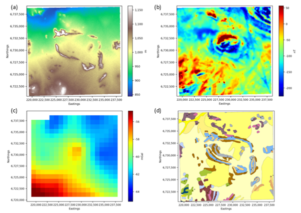
Data to be used in the 3D model. (a) DTM to define the surface topography; (b) IGRF-corrected magnetic data; (c) Bouguer anomaly gravity data; (d) 1:250 000 geology to constrain the top of the model.#
Step 1: Cut out the data for the modelling area#
Although the datasets do not need to have the same extents, the DTM must cover the full modelling area. Large datasets can be cut to smaller areas using the Cut Raster Using Polygon or Clip Raster to Zoom Extents modules.
Step 2: Ensure the datasets are projected#
The modelling routine will not work if the data are in geographic coordinates. It is therefore necessary to ensure that all the datasets are projected and in the same projection. To check the projection of each dataset, look at the raster’s metadata.
Step 3: The datasets must have distinct band names#
Ensure that the band names are distinct and that they clearly identify the type of data. the reason for this is that the datasets must be easily identifiable when setting up the model. Once a raster data set is loaded into PyGMI it is identified by its band name. This can be changed by accessing the raster’s metadata
Import the data and set up the model parameters#
Step 1: Import the data#
In this example we are creating a model from scratch which means that all the datasets that will be used in the modelling process must first be imported. The magnetic gravity and DTM data are imported using Import Raster Data, but the geology is a georeferenced image and must be imported using Import RGB Image.
When importing an existing model, the datasets do not need to be imported again since they are stored as part of the 3D model file.
Step 2: Setup the model parameters#
Select the Model Creation and Editing menu option. The Potential Field Modelling module will appear in the main PyGMI window, and you can connect the imported rasters to this module.
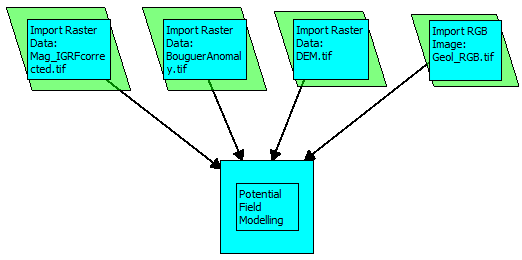
Example of importing datasets and linking them to the Potential Field Modelling module.#
Double-click the Potential Field Modelling module to bring up the Model Extent Parameters dialog box. Here you assign the rasters to the correct datasets, select the raster that will define the modelling area and select the depth extent and cell sizes. In this example we will start with a relatively coarse cell size. Once the basic model is in place, more detail can be added by reducing the cell size.
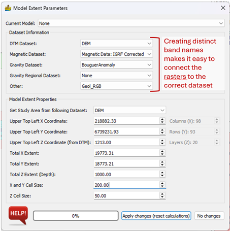
The Model Extent Parameters for the model.#
Step 3: Define the geophysical parameters#
Select Geophysical Parameters on the top toolbar to set up the geophysical data parameters. The Gravity Regional and Lithological Properties can be changed at any time during the modelling, but the survey heights and magnetic field parameters during the time of the survey should not need to be changed once they have been entered at the start of the modelling process.
Three lithologies with their petrophysical properties were defined to start off with. Properties for some of the lithostratigraphies in the area were available from the Petrophysics Database of the CGS (https://maps.geoscience.org.za) while others had to be estimated from properties of similar lithologies.
Lithostratigraphy |
Density (kg/m3) |
Magnetic susceptibility (SI) |
Natural remanent magnetisation (A/m) |
Q-ratio |
|---|---|---|---|---|
Shale, muscovite and biotite-bearing schist |
2580 |
0.0002 |
1.03 |
254.81 |
Koeipoort Granite |
2595 |
0.0010 |
0.89 |
11.22 |
Gabbro |
3070 |
0.0389 |
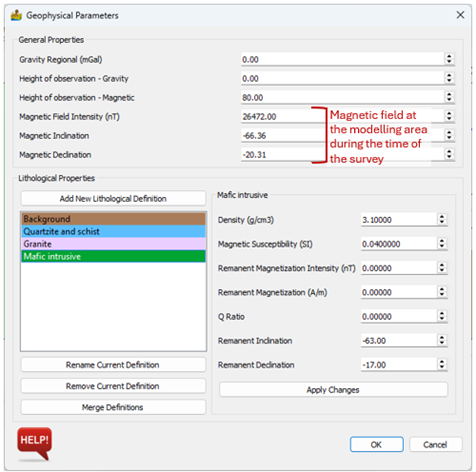
Geophysical parameters for the model.#
Modelling#
The focus will be on the semicircular feature in the centre of the area. The geological map shows the outcropping layers dipping towards the centre of this feature, forming a basin. A gravity high in the northern part of the basin corresponds to high amplitude magnetic anomalies. The area consists mostly of granites, gneisses with some shale and schist layers, all of which have low densities. Mafic intrusives in the southwestern corner are the only dense material that could possibly cause the gravity high. We will therefore see if it is possible to model the gravity and magnetic anomalies as a mafic intrusive.
Step 1: Set up the interface#
We will start with modelling the gravity data. The interface is therefore set up to display the gravity data in the Layer View and to display the gravity profile. An arbitrary gravity regional of -60 mGal was defined in the Geophysical Parameters. The profile is moved to cross over the central gravity high and, since the mafic rocks do not crop out, the layer being viewed is moved deeper (indicated by blue line in the profile’s modelling section). Finally, the transparency of the model in the layer view is increased to make the gravity data visible.
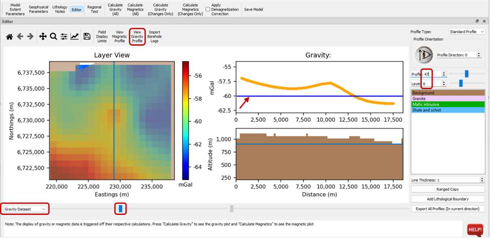
Modelling interface set up for modelling the gravity anomaly in the centre of the area.#
Step 2: Add a body#
We will start adding the mafic intrusive lithology to the layer view. The correct lithology is selected by clicking on it and it is then drawn in as you would draw in a paint program. To speed up the initial stage, the line thickness was increased to 2. When the body is drawn in on the layer it appears on the profile view. Note that the original colour selected for mafic intrusives was a bit light making it difficult to see in the transparent model view. It was simply changed in Geophysical Parameters. If the colour doesn’t update in the layer or profile view, move to another profile and layer and then move back to the layer you were modelling.
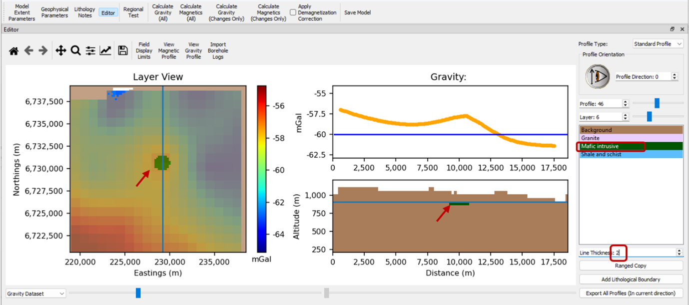
Start the model by adding drawing in a lithology.#
Next, we want to increase the thickness of the body. The quickest way is to use Ranged Copy. Select Layer View and select the range start and end. At first, we will copy it down to layer 13 which means the body will 400 m thick (a voxel is 50 m thick).
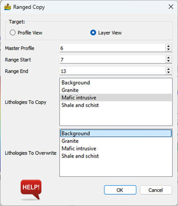
Ranged copy settings to increase the body’s thickness.#
The gravity response of the model is calculated and it’s clear that either the density is too high, the body is too thick or it is too shallow. Before changing the model, calculating the magnetic response may help with the adjustments that need to be made.
Once the responses have been calculated, the Magnetic Residual and Gravity Residual datasets can be viewed in the Layer View.
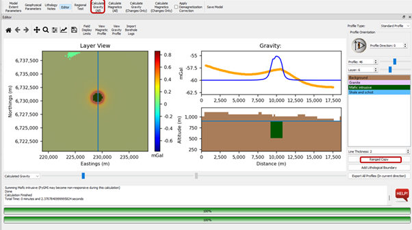
Increase the thickness of the body via Ranged Copy and calculate the gravity response.#
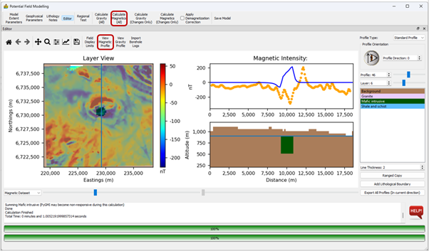
The magnetic response of the model.#
By comparing the magnetic data with the geology map, it is clear that the lower amplitude magnetic anomalies in the semi-circular feature coincide with outcrops of the Koeipoort Granite. The granite has a strong remanent magnetisation component but unfortunately the direction of the remanence is not known. Since the anomalies appear to be predominantly positive with a small negative component, which is expected for induced magnetisation in this area, the inclination and declination of the remanent magnetisation were set to that of the prevailing magnetic field. The geological map which was imported into the model is selected as the background image and the granite is drawn in where the granite crops out.
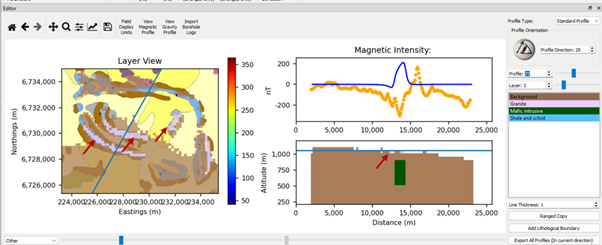
The granite is added to the model, guided by the geological outcrops.#
Ranged Copy was used to copy the granite from the surface downward to greater depths. In this case, since the granite dips inward, the layer was only copied to two layers at a time. The deepest of these two layers is then edited and copied to deeper layers, and so on.
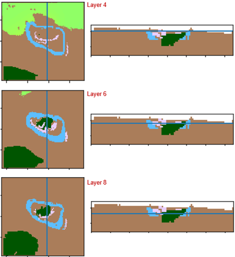
Depth slices at three layers to show how the granite (pink) changes.#
Reversely magnetised remanence was assigned to the mafic body to test whether that will result in a better fit, which it did.
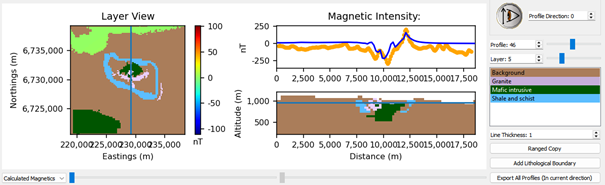
Calculated magnetic field when the mafic body is reversely magnetised.#
The idea now is to continue with this process. Forward modelling is an iterative process consisting of changing the geometry, physical properties, number of lithologies etc. until the calculated field fits the observed field to a satisfactory degree. The more constraints available (e.g. petrophysical parameters and borehole information), the less ambiguous the result will be. However, remember that the idea of geophysical modelling is to test different ideas.